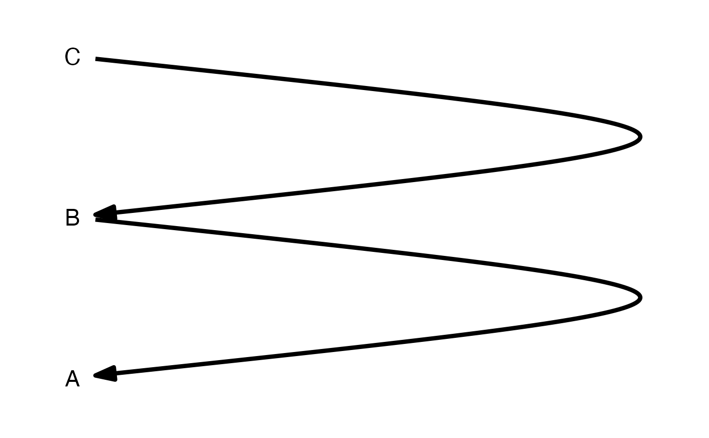
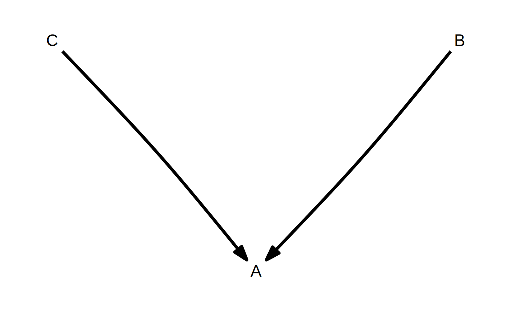
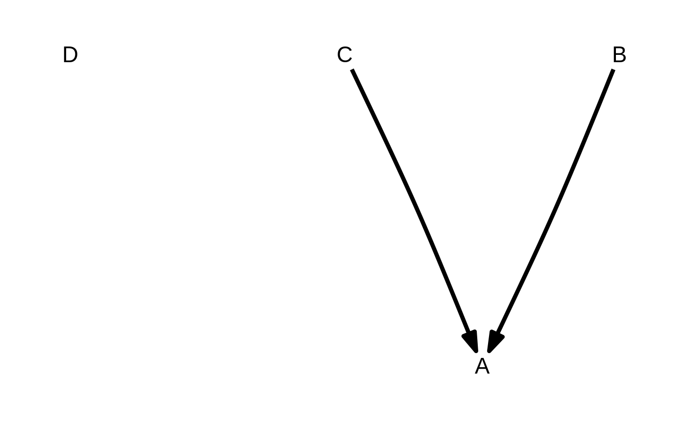

This function is a simple wrapper around the function from the ggm
package with the same name. The only differences are that the order
argument defaults to TRUE and that it adds a DAG class for
easy plotting. Typically, one would use define_model_set() to
create models for use with the phylopath package.
DAG(..., order = TRUE)
| ... | a sequence of model formulae |
|---|---|
| order | logical, defaulting to |
An object of classes matrix and DAG
Supply a formulas for the model as arguments. Formulas should be of the
form child ~ parent`` and describe each path in your model. Multiple children of a single parent can be combined into a single formula: child ~ parent1 + parent2. Finally, an isolate (unconnected variable) can be included as being connected to itself: isolate ~ isolate`.
